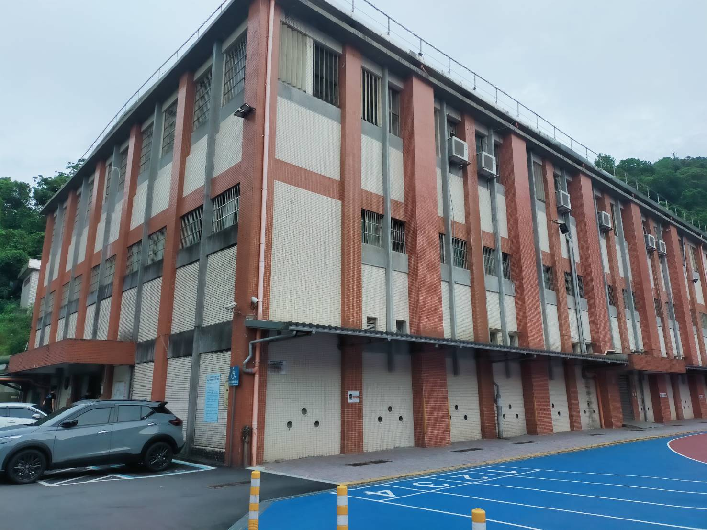
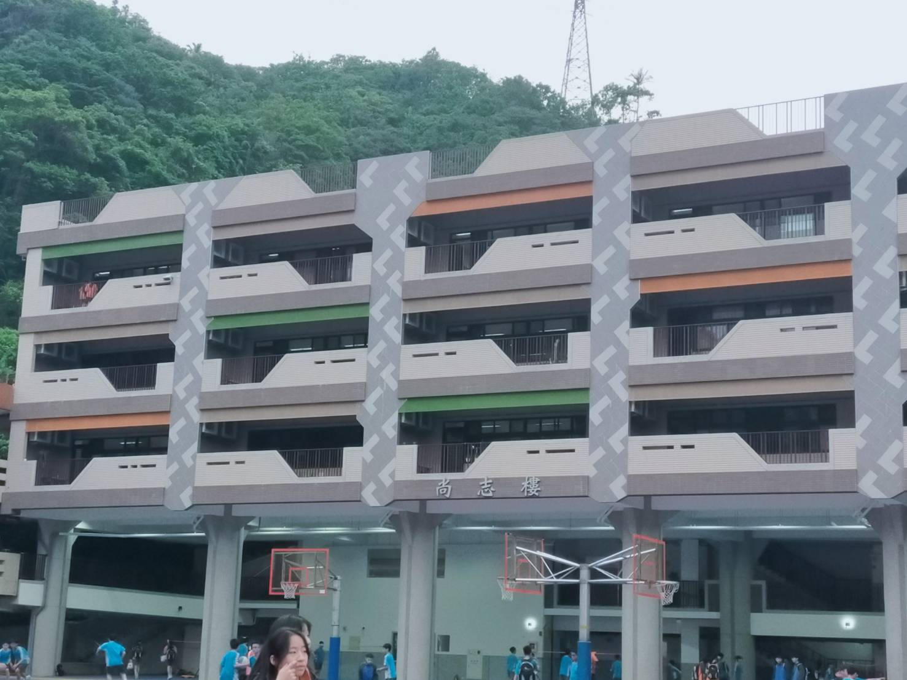
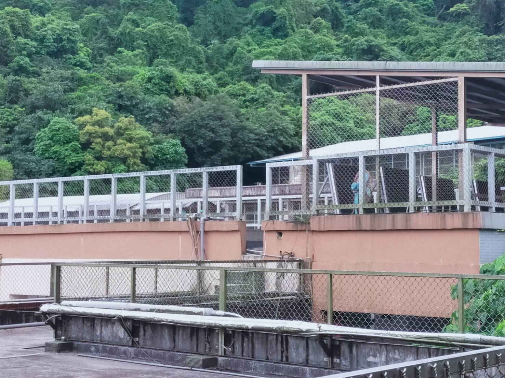
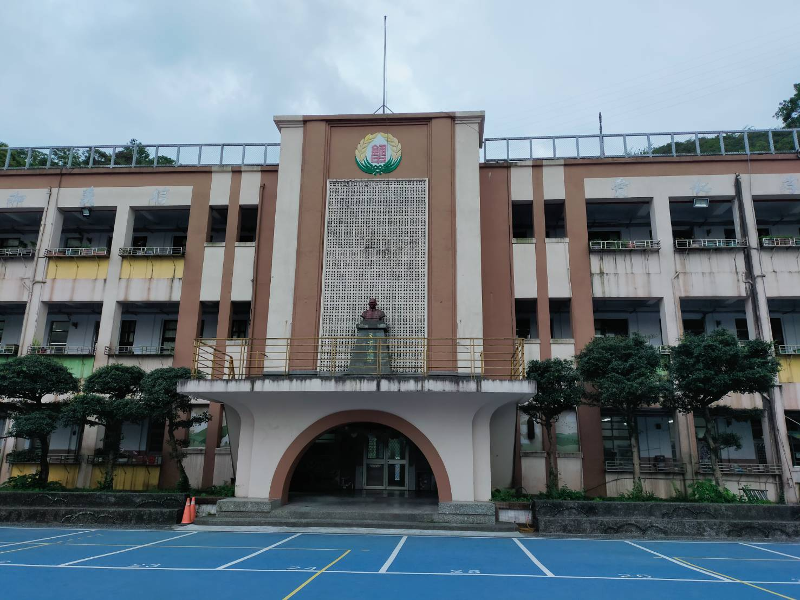
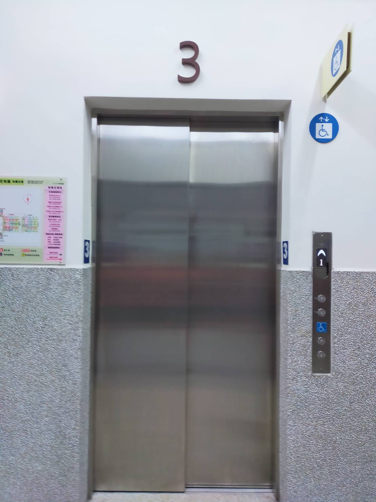
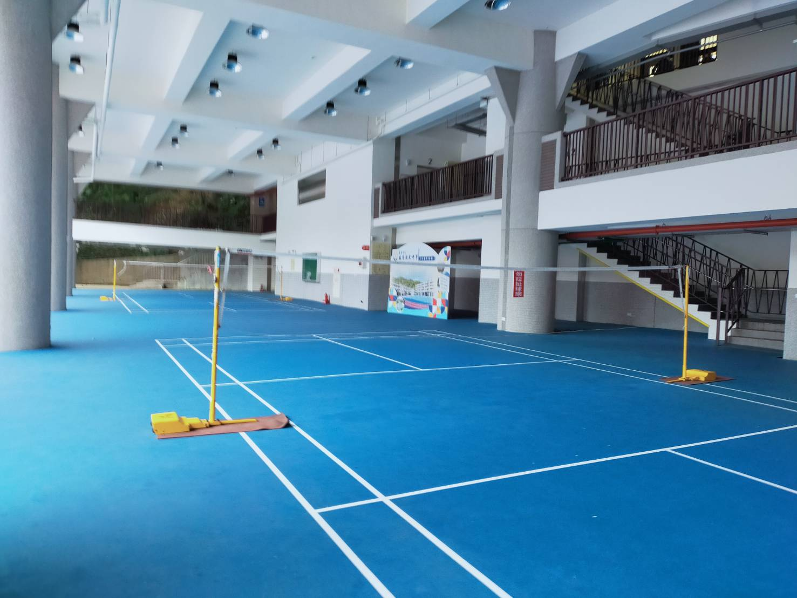
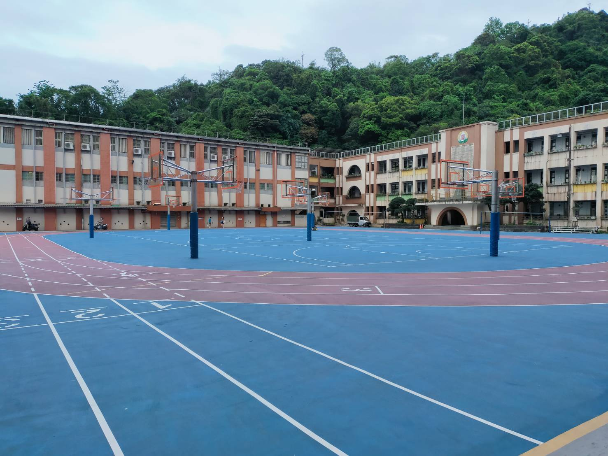
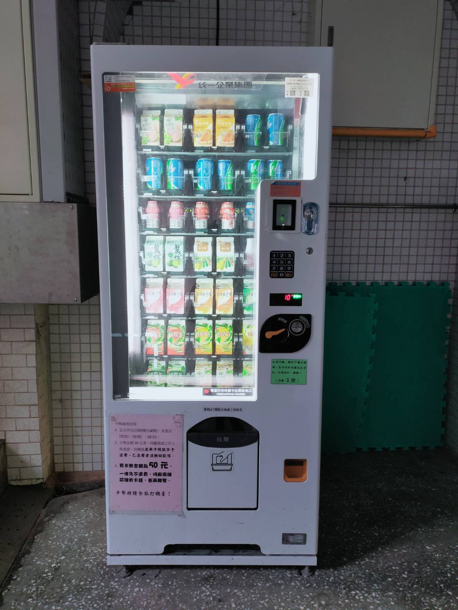

| 圖片 |  |
 |
 |
 |
|
| 地點 | 禮堂 | 尚志樓 |
厚生樓 |
射箭場 | 行政大樓 |
| 介紹 | 是學校朝會演講的場地, 裡面還有6個籃球框 可以用 |
去年113年才完工,內有新的教室 讓7、8年級上課還有新的桌球教室、 生科教室 |
位在行政大樓的後方 內有體育班的教室、烹飪教室 舊的桌球室,定樓還有風雨操場 供人使用 |
是銘傳體育班射箭隊的練習場地 一般學生不可以隨便上去 |
從日治時期就已經蓋了,歷史悠久,是現在 九年級的教室 |
| 圖片 |  |
 |
 |
 |
|
| 地點 | 電梯 | 小明星廣場 | 操場 | 販賣機 | 日新樓 |
| 介紹 | 是全校唯一的電梯,位在尚智樓, 只有老師能搭,一般學生要在老 師同意下才能搭
|
內有二個羽球網,可以讓 老師和學生在下課、放學 或上體育課時使用 |
有許多籃球框和排球網,下課 時會有很多學生在打球,上課時 也可以供體育班、體育課使用 |
學校內有8臺販賣機,下課時會 有許多學生前來購買 |
是以前尚至樓還沒完 工時8年級的教室,現在8年級以移 去去尚智樓 |